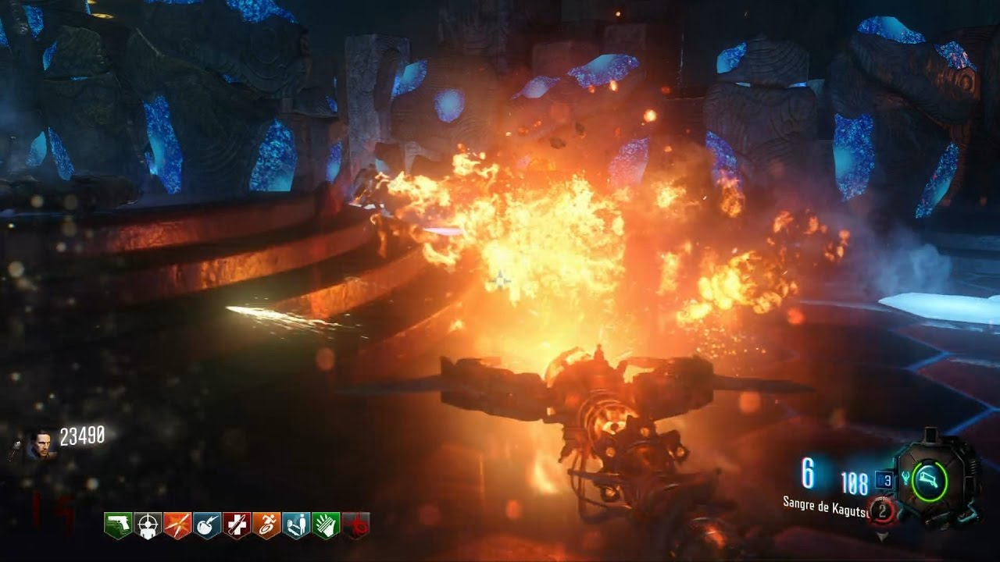
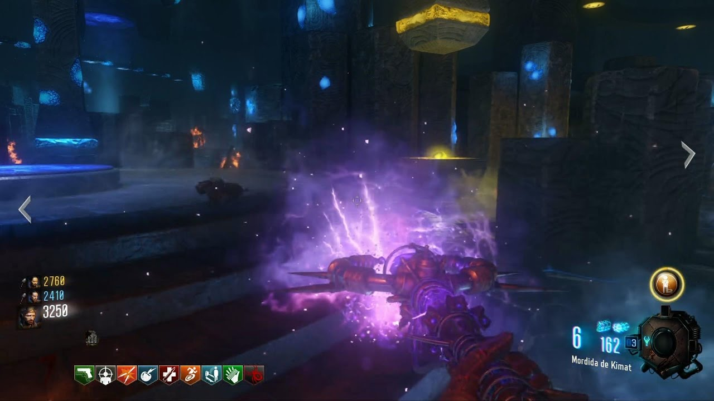
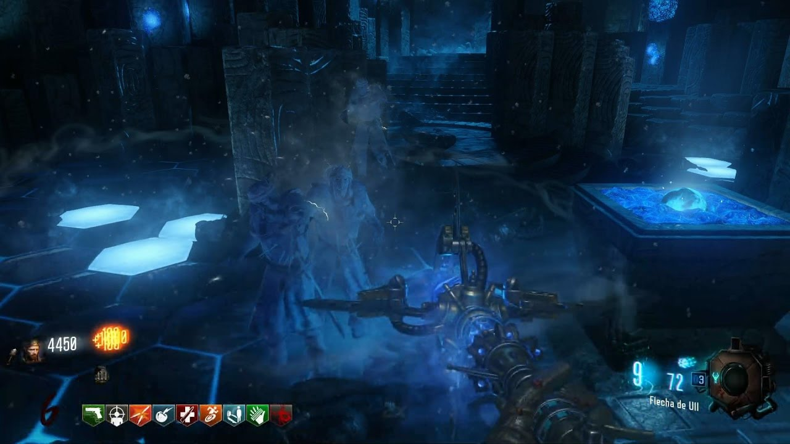
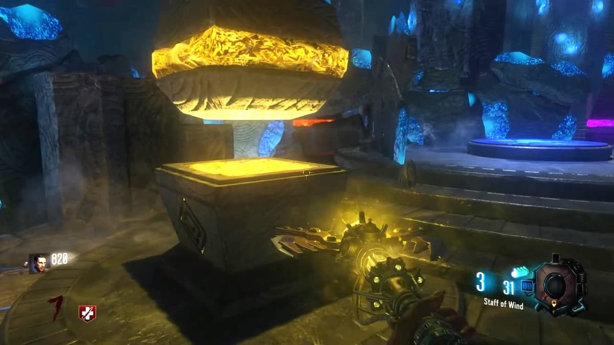
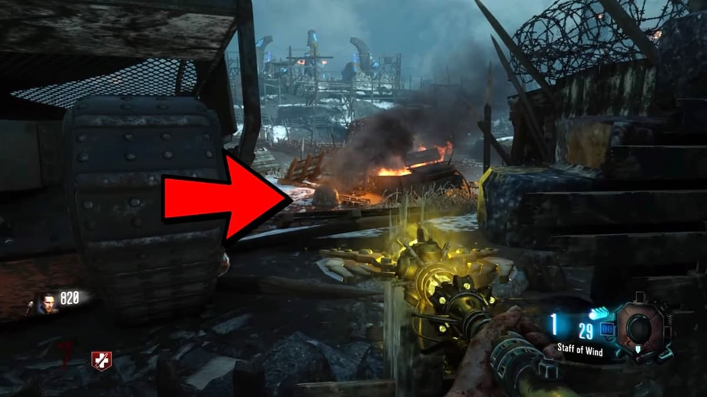
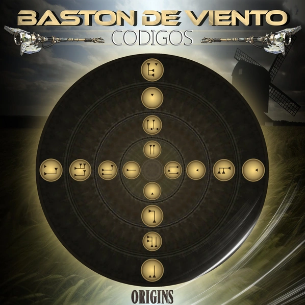
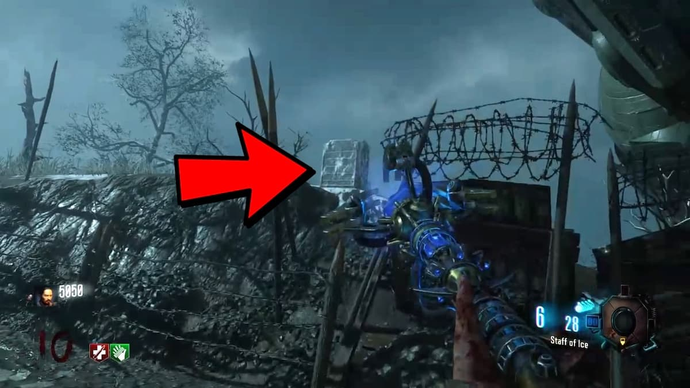
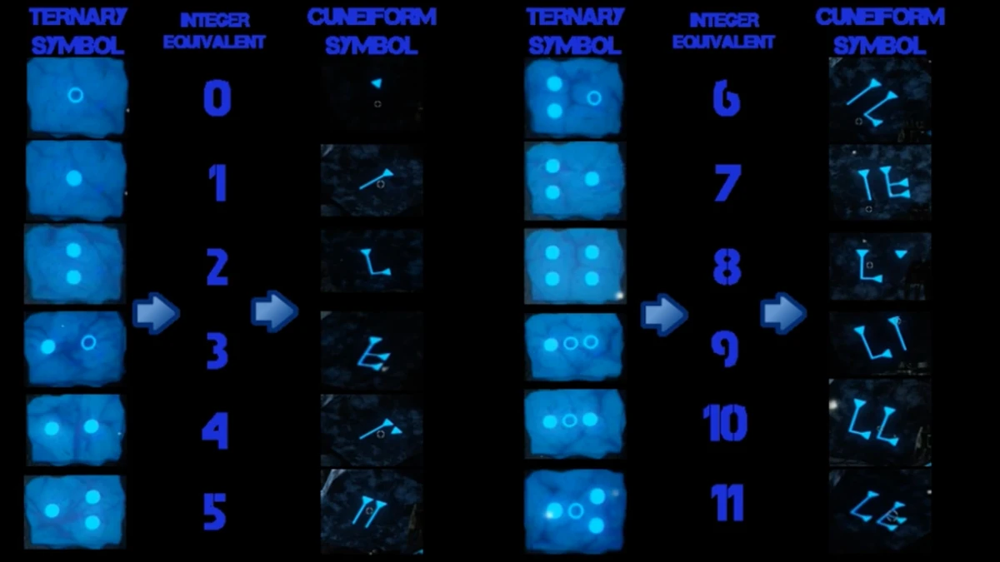
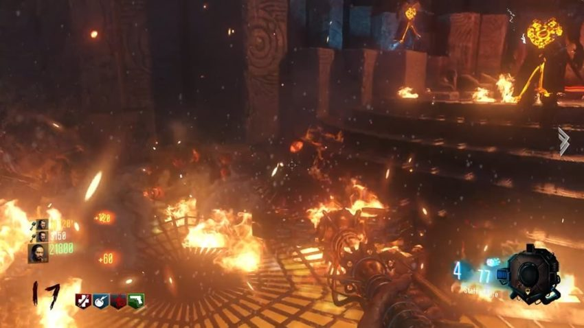
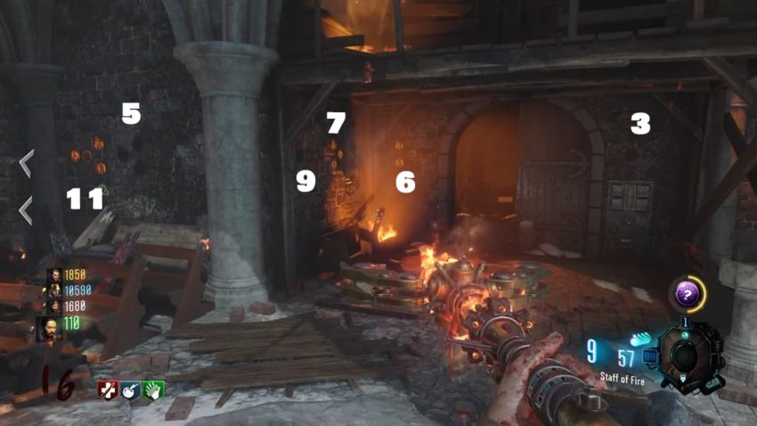

Easter Egg de Origins
links de los canales de ElGamingChannel mi youtuber de zombies favorito, y también recomiendo a MrAnsed23.
Aquí aprenderás a hacer paso a paso el ee de Origins tanto en solo como en grupo.
Paso 1
Construir los bastones elementales y mejorarlos. CONSTRUIRLOS MEJORARLOS
Paso 2
Colocar cada bastón mejorado en su respectivo gigante:
- Bastón de Fuego: Colocarlo en la cámara principal.
- Bastón de Viento: Gigante del medio, Odin.
- Bastón de Hielo: Gigante que pasa por la iglesia, Freya
- Bastón de Rayo: Gigante de Recarga Rápida, Thor.
Paso 3
Dentro del edificio que está enfrente del generador 2, hay una mesa con 4 piedras, cada jugador cogerá una y la pondrá en una fuente que hay dentro de la iglesia.
Todos los jugadores deberán matar con los puños de hierro cerca de la fuente hasta que su piedra no trague más almas de zombies muertos, esto querrá decir que la piedra de ese jugador ya está limpia y la podrá coger.
Ahora debes coger la piedra y llevarla a la misma mesa dónde la cogimos antes, pero tendreis que llegar sin tocar el barro, saltando por las tablas de todo el mapa y por el medio de las huellas de los gigantes, si tocais el barro se os ensuciará la piedra y tendreis que llevarla a la fuente otra vez y vovler a empezar el camino hacia la mesa.
Al llegar a la mesa la ponemos y volvemos a matar con los puños de hierro (esto se puede hacer mas fácilmente con el ataque cargado de cualquier bastón y el escudo cerca de la mesa hasta que nos aparezca encima de la mesa unas balizas de mortero.)
Este paso se puede hacer tanto en 1, 2 , 3 como 4 jugadores.
Paso 4
Ahora vendrán los 3 gigantes al mismo tiempo y solo un gigante tendrá un pie iluminado. Cada jugador vigila un gigante y el que pueda entrará a su cabeza.
Una vez dentro habrá un botón rojo que pulsaremos, en ese instante otro jugador lanzará una de las balizas de mortero conseguidas en el paso anterior a una zona resquebrajada que está fuera del mapa en la zona de la ventaja de Resistencia Plus en la cual se ve un avión y delante del avión está esa zona resquebrajada que desentona con el resto del paisaje.
Ahora caerá un bombardeo y esa zona se destruirá y aparecerá un agujero, pues bien lanza el drone de Maxis y este entrará por ese hueco. Después de esto saldrán varios Panzer Soldat del agujero y los matais.
Si estas haciendo este paso en solo tienes que ir a la zona del generador 5 y esperar al gigante del medio, debes ver cual pie tiene encendido, y entrar por el, espera 10s y justo antes del 0 presiona el boton rojo de al frente, si ha salido bien esciuucharas que fue satisfactorio, luego debes lanzar los morteros hacia la zona de fuera del mapa, si ha salido bien samantha te hablará, sino avanza una ronda y espera a que llegue dicho gigante
Paso 5
En este paso debeis conseguir la nueva ventaja Sangre zombie y con ella podreis ver un avión que recorre el cielo y se ve iluminado, igualito que el avión que destruyes para coger la pieza del Bastón Naranja, pues bien destruye este avión también.
Ahora un jugador con el Bastón de Hielo deberá apagar 3 carros que están repartidos por el mapa:
- Al lado del generador 4 donde está el Titán.
- En la salida del edificio del medio que lleva al punto de excavación.
- Llendo al generador 5 por el camino de la izquierda.
Paso 6
Después de apagar los carros, a la izquierda de la Maquina de mejora (pack-a-punch) saldrá la ventaja Sangre de zombie. Un jugador la cogerá y podrá ver al zombie de Maxis que recorre la zona de alrededor del punto de excavación y lo deberá matar. Fijaos bien porque el zombie de Maxis se puede confundir con un zombie normal.
Al matarlo dejará el dron de Maxis que lo podremos recuperar.
Paso 7
En la cámara principal, dónde están las estatuas, aparecerán templarios con las manos con un haz de luz blanca y los mataremos con los puños de hierro. Al resto de zombies se les puede matar normal.
Después de que cada jugador mate a varios templarios nos dejarán las piedras del paso 3 y cada jugador podrá coger su piedra y en ese momento conseguirá mejorar el poder de sus puños.
Ahora nos iremos a cualquier portal, en dónde tendremos que llenar de almas el portal, para ello debemos dejar los 4 bastones mejorados en sus respectivos pedestales que hay dentro del portal y los templarios comenzarán a soltar sus almas al morir. Debeis matar a bastantes templarios hasta que se abra el portal y entonces abriremos el portal a Agartha y desbloquearemos el logro.
Para ver la escena final, teneis que lanzar el dron de Maxis dentro del portal. Pero esto hará que se termine la partida.
Bastón de Fuego:
- Pieza 1: Derriba un avión que lleva una luz naranja, caerá la pieza.
- Pieza 2: Mata al Panzar Soldat y te dejará otra pieza.
- Pieza 3: Activa los 6 generadores y el cofre de los desafíos te dará la pieza.
- Ubicación 1: Debajo del tanque, arráncalo para coger el disco.
- Ubicación 2: Dentro de la iglesia encima de un banco.
- Ubicación 3: Antes de llegar al Generador 6 encima de unas cajas.
Ahora debes ir al túnel del cartel que pone Fire que está al salir del laboratorio o sala principal llendo hacia el Generador 3. En ese túnel coloca el gramófono y entra en el portal que se abrirá. Aparecerás en la sala de los antiguos y debes coger la piedra roja que corresponde con este bastón de fuego. Vuelve por donde viniste y para montarlo ve a la cámara principal despues de haberla abierto con el gramófono y el disco principal, móntalo en la estatua correspondiente.
Bastón de Rayo:
- Pieza 1: Durante la ruta en el tanque a la derecha verás una torre de madera salta a ella.
- Pieza 2: Durante la ruta en el tanque justo antes de llegar a la iglesia a la derecha verás un camino.
- Pieza 3: Durante la ruta en el tanque saltando a una plataforma de madera que hay a la izquierda durante la ruta de vuelta a la iglesia
- Ubicación 1: A la izquierda del Titán encima de una mesa.
- Ubicación 2: Antes de entrar al generador encima de un carro con cajas.
- Ubicación 3: Dentro del túnel que está detrás del Generador 4.
Ahora ve al túnel de al lado del Generador 5 y repite el mismo proceso para abrir el portal, coger la piedra y montar el bastón.
Bastón de Hielo:
- Las 3 piezas se consiguen excavando en los montículos de tierra y huesos que hay por todo el mapa, pero cuidado solo descubriremos estas piezas si excavamos mientras está nevando.
- Ubicación 1: En el edificio que está enfrente del Generador 2, encima de unas estanterías.
- Ubicación 2: En el edificio que está enfrente del Generador 2, encima de una mesa nada más entrar.
- Ubicación 3: En el edificio que está enfrente del Generador 2, encima de otras estanterías.
Ahora ve al túnel que está al pasar la iglesia en el Generador 6 y repite el proceso para abrirlo, coger la piedra y montar el bastón.
Bastón de Viento:
- Sus piezas se encuentran en las cabezas de los gigantes que recorren el mapa. Para acceder a ellas tenéis que disparar a la parte de abajo del pie iluminado del gigante, entonces se abrirá un portal en la planta de su pie y os teneis que dejar pisar y ese portal os llevará a su cabeza.
- Ubicación 1: En el Generador 5 encima de un muro destruido.
- Ubicación 2: A la izquierda del Generador 5 encima de unas cajas.
- Ubicación 3: En la mesa de trabajo que está en el túnel al lado del Generador 5.
Ahora ve al túnel que está al lado del Titán y repite el proceso para abrirlo, coger la pieza y montar el bastón.
Mejorar el Bastón de Rayos:
- Coger el Bastón de Rayos de la sala de las estatuas, es el bastón morado.
- Abrir el portal correspondiente a este bastón que es el portal que está en el túnel de al lado del Generador 5.
- Después de teletransportarnos dentro del portal, detrás de nosotros veremos unos triángulos morados, les debemos disparar con el bastón en el siguiente orden:
- Fila de abajo de triángulos, empezando por la izquierda, el 1, el 3 y el 6.
- Fila de abajo de triángulos, empezando por la derecha, el 1, el 3 y el 5.
- Fila de abajo de triángulos, empezando por la izquierda, el 2, el 6, y el 4.
- Ahora debemos buscar los paneles grises que hay por todo el mapa e interactuar con ellos para ponerlos en la posición en la que no produzcan una chispa que les sale a algunos. Teneis que seguir un orden para arreglarlos:
- El que está en el Generador 5.
- El que está debajo de la iglesia al lado del tanque.
- El que está dentro de la iglesia a la izquierda de dónde aparece la caja misteriosa.
- El que está detrás del Generador 4.
- El que está en la sala principal, es decir, en el laboratorio.
- El que está en el edificio de enfrente al generador 2, a la izquierda de la segunda parada del tanque.
- El que está a la izquierda del punto de excavación, enfrente al camino que lleva a la iglesia.
- Vamos a la sala de las estatuas y veremos un orbe morado encima nuestra, le disparamos con el Bastón de Rayos y ahora tenemos que pulsar las 4 palancas que hay por toda la sala para que las 4 estructuras que tienen 4 círculos cada una, tengan todos sus círculos morados. Si lo habéis hecho bien los círculos se iluminarán y se reiniciarán a sus antiguas posiciones.
- Ahora volvemos al portal que está en el túnel de al lado del Generador 5 y colocamos el Bastón de Rayos en su pedestal morado. Hecho esto, matamos a unos 20 o 30 zombies alrededor del pedestal y podremos volver a coger nuestro bastón, ya mejorado.
Mejorar el Bastón de Viento:
- Coger el Bastón de Viento en la sala de las estatuas, es el bastón amarillo.
- Abrir el portal correspondiente a este bastón que es el portal que está en el túnel de al lado del Generador 4.
- Después de teletransportarnos dentro del portal, encima de nosotros veremos cuatro círculos con 4 figuras cada uno, hay que formar un código disparando con el Bastón de Viento y moviendo las figuras, de tal forma que queden en el orden que aparece en la imagen:
- Ahora debemos disparar con el Bastón de Viento a 3 pequeñas estructuras de piedra de forma circular que hechan un humo muy negro y que están en distintas zonas fuera del mapa.
- En el Generador 4, en la zona contraria al Titán.
- Llendo al Generador 5 por el camino izquierdo, detrás del carro que se está quemando.
- Por el camino que circula el tanque justo antes de entrar a la iglesia, si vas caminando verás el humo negro a tu derecha. 
- Vamos a la sala de las estatuas y veremos un orbe amarillo encima nuestra, le disparamos con el Bastón de Viento y ahora tenemos que pulsar las 4 palancas que hay por toda la sala para que las 4 estructuras que tienen 4 círculos cada una, tengan todos sus círculos amarillos. Si lo habéis hecho bien los círculos se iluminarán y se reiniciarán a sus antiguas posiciones.
- Ahora volvemos al portal que está en el túnel de al lado del Generador 4 y colocamos el Bastón de Viento en su pedestal amarillo. Hecho esto, matamos a unos 20 o 30 zombies alrededor del pedestal y podremos volver a coger nuestro bastón, ya mejorado.
Cuando las tengamos en el orden de la imagen solo tendremos que disparar al segundo círculo más pequeño. Si lo hemos hecho bien, todos los círculos se empezarán a mover.
Mejorar el Bastón de Hielo:
- Coger el Bastón de Hielo en la sala de las estatuas, es el bastón azul.
- Abrir el portal correspondiente a este bastón que es el portal que está en el Generador 6.
- Después de teletransportarnos al portal del túnel en el Generador 6, veremos a un lado una placa azul con un símbolo, y encima nuestra un camino de placas con diferentes símbolos, pues bien debemos disparar a cada una de placas que están encima nuestra que se corresponda con el símbolo que está en la pared. Si acertamos se irán dando la vuelta, pero si fallamos tendremos que volver a empezar.
- El siguiente es disparar con el Bastón de Hielo a 3 lápidas repartidas por el mapa y después de congelarla, destruirlas con un arma de fuego.
- La primera está detrás del Titán en la zona donde pisa el gigante, fuera del mapa.
- La segunda está yendo desde el Titán al camino de la iglesia y la veremos si nos ponemos en la huella del gigante anterior a la de la primera lápida y miramos hacia el punto de excavación.
- La tercera se encuentra en la segunda parada del tanque, en la zona del Generador 2 está fuera del mapa justo enfrente de donde para el tanque. 
- Vamos a la sala de las estatuas y veremos un orbe azul encima nuestra, le disparamos con el Bastón de Hielo y ahora tenemos que pulsar las 4 palancas que hay por toda la sala para que las 4 estructuras que tienen 4 círculos cada una, tengan todos sus círculos azules. Si lo habéis hecho bien los círculos se iluminarán y se reiniciarán a sus antiguas posiciones.
- Ahora volvemos al portal que está en el túnel de al lado del Generador 6 y colocamos el Bastón de Hielo en su pedestal azul. Hecho esto, matamos a unos 20 o 30 zombies alrededor del pedestal y podremos volver a coger nuestro bastón, ya mejorado.
Aquí os dejo una imagen, hecha por mi, con todas los símbolos que corresponden a cada grupo de círculos

Mejorar el Bastón de Fuego:
- Coger el Bastón de Fuego en la sala de las estatuas, es el bastón naranja.
- Abrir el portal correspondiente a este bastón que es el portal que está en el túnel del Generador 1.
- Después de teletransportarnos al portal del túnel en el Generador 1, veremos una especie de brasas en el suelo, y a nuestra derecha una piedras con unos símbolos. Tenemos que matar a unos 20 o 30 zombies encima del suelo iluminado por las brasas hasta que veamos los 4 símboloes iluminados en naranja. Como siempre se escuchará un sonido para saber que lo hemos hecho correctamente. 
- Ahora vamos a la iglesia a la parte de arriba y si miramos hacia la ventana de maderas por la que salen los zombies veremos en nuestra pantalla todos los círculos que han aparecido, algunos encendidos y otros apagados, cada grupo de círculos significa un número.
Pues después de saber esto, debemos mirar que círculos están encendidos y recordar a que números pertenecen esos círculos encendidos. Ahora en el piso de abajo donde está el tanque hay unos números en las columnas, debemos disparar con el Bastón de Fuego a los números que estaban encendidos en el piso de arriba para encender las antorchas que están encima de ellos y por último el número 4 que aparece representado por la antorcha manchada de sangre que está a la izquierda del cartel que pone Tank Station.
- Vamos a la sala de las estatuas y veremos un orbe naranja encima nuestra, le disparamos con el Bastón de Fuego y ahora tenemos que pulsar las 4 palancas que hay por toda la sala para que las 4 estructuras que tienen 4 círculos cada una, tengan todos sus círculos naranjas. Si lo habéis hecho bien los círculos se iluminarán y se reiniciarán a sus antiguas posiciones.
- Ahora volvemos al portal que está en el túnel de al lado del Generador 1 y colocamos el Bastón de Fuego en su pedestal naranja. Hecho esto, matamos a unos 20 o 30 zombies alrededor del pedestal y podremos volver a coger nuestro bastón, ya mejorado.
Bugs
Un bug de los principales es el del escudo para el paso de los morteros, este bug consiste en usar el ataque cargado de cualquier bastón y por consiguiente de manera instantánea, usar el escudo, esto el juego lo tomará como si fuese un ataque cuerpo a cuerpo.
este bug también puede ser usado en el paso de limpiar la piedra con la excepción de que no se necesita el ataque cargado, con el simple hecho de usar un ataque cuerpo a cuerpo es suficiente (usar el escudo lo hace mas rápido).